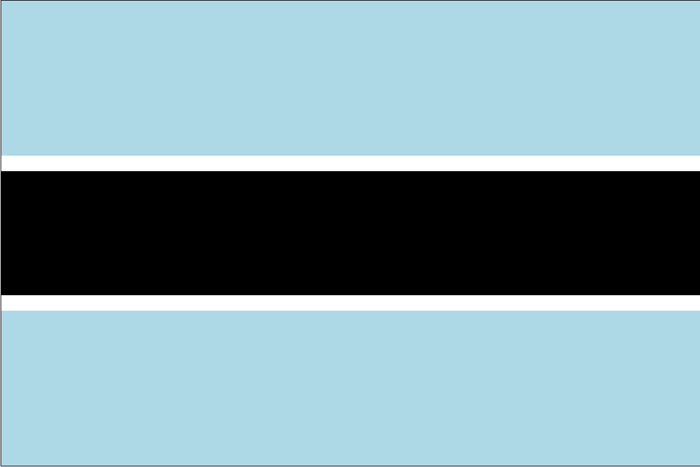
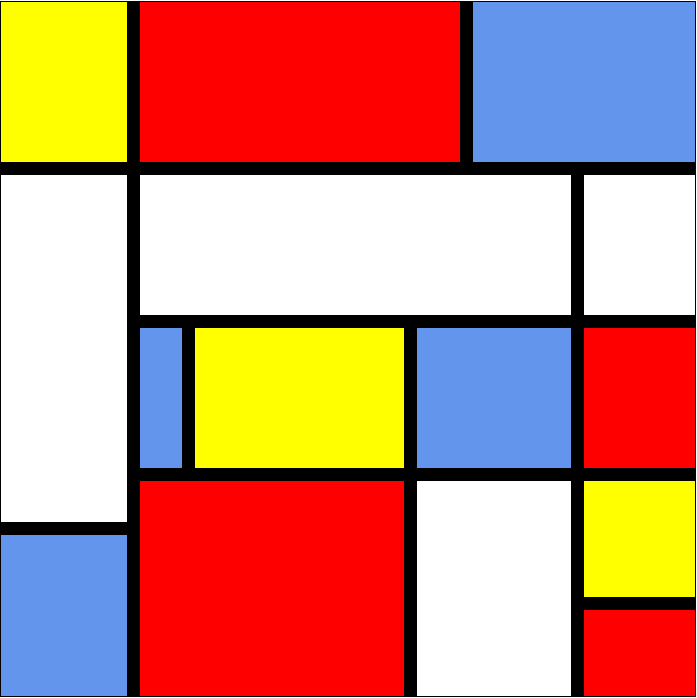

| Botswana | Mondriaan | Use case Diagram |
|  |  |  |
| Dit is de vlag van botswana. We moesten het maken met html & css. | Bij deze opdrachr moesten een mondriaan na maken. Je moest wel weten hoe dingen verplaats | Use case diagram maken om klanten kunnen laten zien hoe een website werk of applicatie |